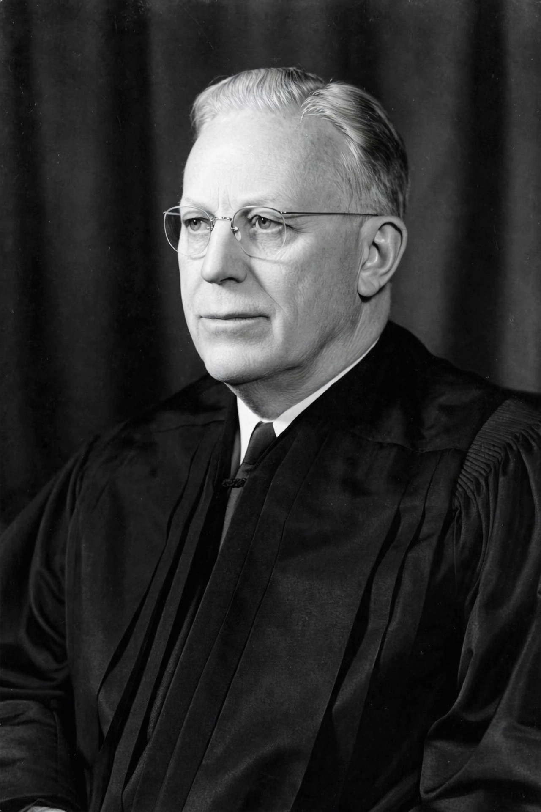

| Born | 19 March 1891 Los Angeles, California |
|---|---|
| Died | 9 July 1974 (aged 83) Washington, D.C. |
| Office | 14th Chief Justice of the United States (1953–1969) |
| Previous office | 30th Governor of California (1943–1953) |
| Appointed by | Dwight D. Eisenhower |
| Party | Republican |
| Spouse | Nina Meyers (m. 1925) |
Earl Warren (March 19, 1891 – July 9, 1974) was an American lawyer, politician, and jurist who served as the 14th chief justice of the United States from 1953 to 1969. The Warren Court presided over a major shift in American constitutional jurisprudence, expanding civil rights, civil liberties, judicial power and federal power in decisions that remain landmarks of twentieth-century law. Warren had previously served as Governor of California from 1943 to 1953 and was the Republican nominee for vice president in 1948.
Warren was born in Los Angeles to Norwegian and Swedish immigrant parents and was raised in Bakersfield. He studied law at the University of California, Berkeley, served in the army during the First World War, and entered public service in Alameda County, becoming district attorney in 1925. He gained a reputation as a vigorous, nonpartisan prosecutor. In 1938 he was elected Attorney General of California.
As governor from 1943, Warren modernised California's government, expanded its highway and university systems and built up social insurance programmes, and he won re-election in 1946 and 1950 — famously winning both parties' primaries under California's cross-filing system. His career was also shadowed by his support, as attorney general and governor-elect, for the internment of Japanese Americans during the Second World War, a position he later expressed regret over. In 1948 he ran for vice president on the Republican ticket with Thomas E. Dewey, losing to Harry Truman's Democrats.
President Dwight D. Eisenhower appointed Warren chief justice in 1953 following the sudden death of Fred Vinson; Eisenhower is often reported to have later called the appointment the biggest mistake of his presidency, though the quotation is disputed. Warren's leadership style — personally persuasive, focused on consensus and fairness — produced a series of transformative rulings:
In 1963 President Lyndon B. Johnson appointed Warren to chair the commission investigating the assassination of President John F. Kennedy; the Warren Commission concluded in 1964 that Lee Harvey Oswald acted alone, a finding that has remained controversial.
Warren retired in 1969 and was succeeded by Warren Burger. He died in Washington, D.C., in 1974. The Warren Court's rights-expanding jurisprudence — often called the "Warren Court revolution" — provoked strong conservative reaction, including "Impeach Earl Warren" campaigns, but many of its core decisions on equality, criminal procedure and political representation remain foundational.
From Wikipedia, the free encyclopedia.